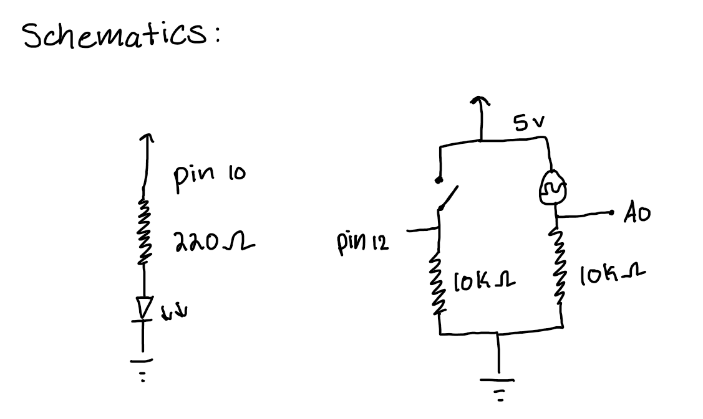

Here is the schematics for assignment 6
The schematics for this circuit first starts with the LED light that is being controlled by the mouse position on the screen The LED light is connected to pin 10 and is powered by a 220 ohm resistor. This resistor calculation uses ohm's law with the goal of 20mA for the LED light along with consideration of the 1.8V drop. The photoresitor and button are in parallel to each other, both using 5V as power. The photoresitor is connected to A0 and the button is connected to pin 12. Both the photoresistor and button are connected to a 10k ohm resistor, this was done to limit power consumption that still provided strong connection to LOW signals.

In this circuit, when the position on the mouse is on the left side of the screen, the green LED is powered off, but fades on when the mouse is moved to the right When the button is pressed on the bred board, the background color of the screen is changed to a random color. When there are different light inputs that is read from the photoresistor, the shade/brightness of the background changes in according to the reading of the photoresistor (Low light would become a darker background | More light would become a brighter background).
There are multiple segments of code for this assignment. The first one is the index.js file:
const BAUD_RATE = 9600; // match with Arduino's baud rate
let port, connectBtn; // declare global variables
let buttonState = 1; // store button state
let lastButtonState = 1; // store last button state
let potValue = 0; // store potentiometer value
let bgColor; // default background color
let baseColor;
let lightLevel = 512;
function setup() {
setupSerial(); // run serial setup function
// create full-screen canvas
createCanvas(windowWidth, windowHeight);
bgColor = color(100, 150, 200); // Initial background color (solid blue)
baseColor = color(100, 150, 200); // Store base color for brightness changes
// p5 text settings
textFont("system-ui", 30);
textStyle(BOLD);
textAlign(CENTER, CENTER);
// create the connect button
connectBtn = createButton("Connect to Arduino");
connectBtn.position(20, 20);
connectBtn.mousePressed(onConnectButtonClicked);
}
function draw() {
const portIsOpen = checkPort(); // Check if the port is open
if (!portIsOpen) return; // If not, exit the loop
let str = port.readUntil("\n"); // Read serial data until newline
if (str.length == 0) return; // If no data is received, return
let values = str.trim().split(","); // Split incoming data by commas
if (values.length === 2) {
lightLevel = int(values[0]); // First value: Photoresistor reading
buttonState = int(values[1]); // Second value: Button state (0 = pressed, 1 = not pressed)
}
//Detect button press transition (change color only when button is pressed (1->0))
if (buttonState === 0 && lastButtonState === 1) {
baseColor = color(random(255), random(255), random(255)); // Assign a new random color
}
lastButtonState = buttonState; // Update the previous button state
// adjust background brightness based on photoresistor value
let newR = map(lightLevel, 200, 1023, 0, red(baseColor)); // Adjust red brightness
let newG = map(lightLevel, 200, 1023, 0, green(baseColor)); // Adjust green brightness
let newB = map(lightLevel, 200, 1023, 0, blue(baseColor)); // Adjust blue brightness
bgColor = color(newR, newG, anewB); // Apply brightness change for all
background(bgColor); // Set the new background color
//Display instructions
fill(255 - newR, 255 - newG, 255 - newB); // Inverted text color
textSize(24);
textAlign(CENTER);
text("Press the button to change background color!", width / 2, height / 2);
text("Cover/uncover the photoresistor to adjust brightness!", width / 2, height * 0.7);
text("Move the mouse to control LED brightness!", width / 2, height * 0.85);
//LED brightness based on mouse position on screen
let ledBrightness = map(mouseX, 0, width, 0, 255);
ledBrightness = constrain(ledBrightness, 0, 255);
port.write(ledBrightness + "\n"); //Send to Arduino
}
// serial setup function
function setupSerial() {
port = createSerial();
// check previously used ports
let usedPorts = usedSerialPorts();
if (usedPorts.length > 0) {
port.open(usedPorts[0], BAUD_RATE);
}
}
// check if serial port is open
function checkPort() {
if (!port.opened()) {
connectBtn.html("Connect to Arduino");
background("gray"); // grey background if not connected
return false;
} else {
connectBtn.html("Disconnect");
return true;
}
}
// handle button connection click
function onConnectButtonClicked() {
if (!port.opened()) {
port.open(BAUD_RATE); // open serial connection
} else {
port.close(); // close connection
}
}
The next segment of code includes the sketch.ino file for the arduino:
const int led = 10;
const int button = 12;
const int potentiometer = A0;
void setup() {
pinMode(led, OUTPUT);
pinMode(button, INPUT_PULLUP);
Serial.begin(9600);
}
void loop() {
int potentiometerValue = analogRead(potentiometer);
int buttonState = digitalRead(button);
Serial.print(potentiometerValue);
Serial.print(",");
Serial.println(buttonState);
Serial.print(potentiometerValue);
Serial.print(",");
Serial.println(buttonState);
if (Serial.available() > 0) {
String input = Serial.readStringUntil('\n');
int brightness = input.toInt();
if (brightness >= 0 && brightness <= 255) {
analogWrite(led, brightness);
}
}
delay(50);
}
Below is a GIF of the circuit operation:

*To Note: This assignment was in colloboration with Jennifer D. & Amy H*